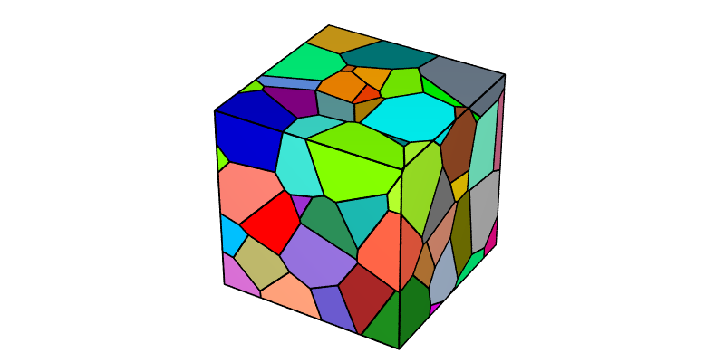
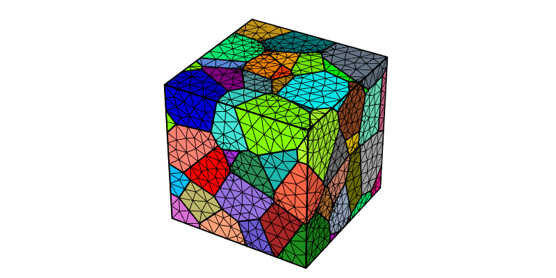
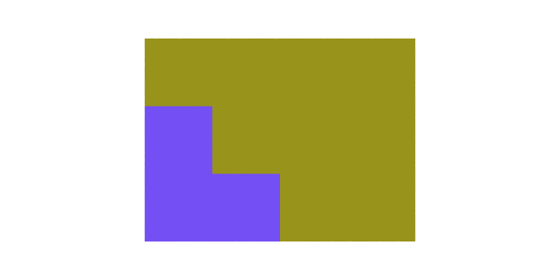
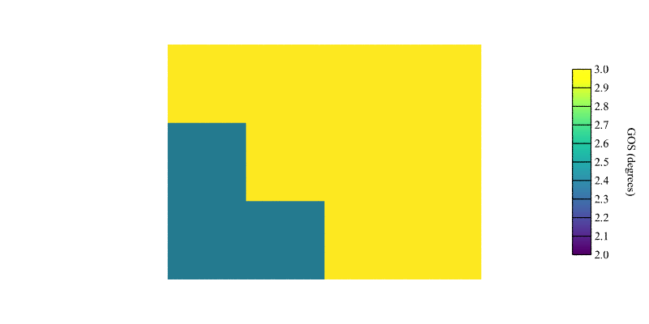
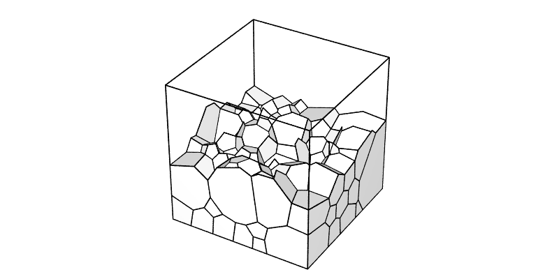
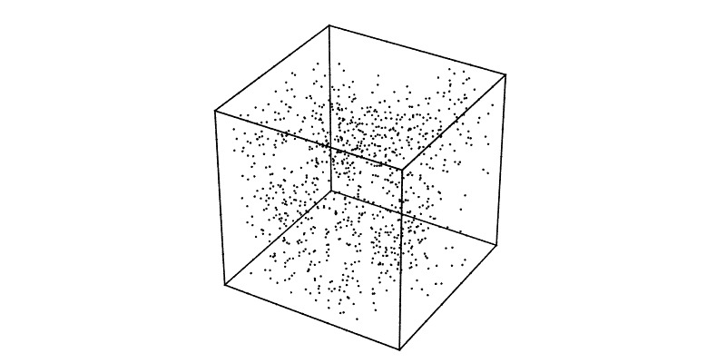
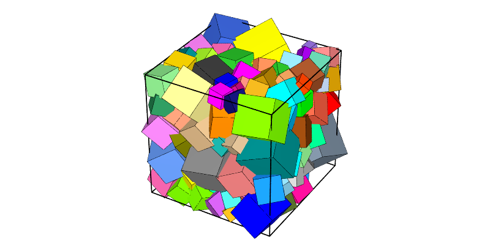
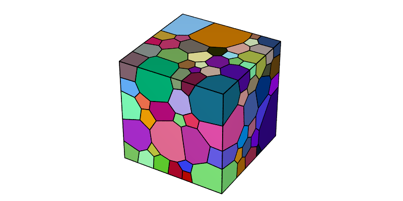
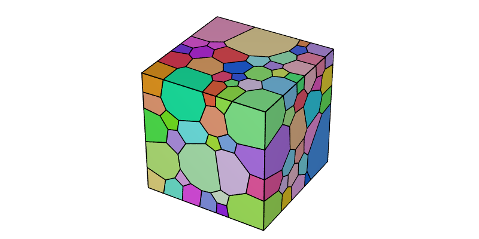
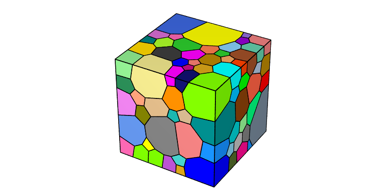

Generating Regular Tessellations
Note
This tutorial presents the -n, -morpho and -dim options of the Tessellation Module (-T). For details on the use of the Visualization Module (-V) in this tutorial, see Visualizing a Tessellation.
To reproduce exactly the images below, add the following line to your $HOME/.neperrc file (or to a local configuration file to be loaded with --rcfile):
neper -V -imagesize 800:400
Regular tessellations are generated using the Tessellation Module (-T) and its -morpho option.
Specifying the Morphology (-morpho)
The morphology of the cells can be specified using -morpho. Generally, a parameter that defines the number of cells is also passed to the option (rather than via -n). A tessellation containing \(4 \times 4 \times 4\) cubic cells can be generated as follows:
$ neper -T -morpho "cube(4)" -o cube4
This produces a Tessellation File (.tess) named cube4.tess.
The tessellation can be visualized using the Visualization Module (-V):
$ neper -V cube4.tess -print img1

A tessellation containing truncated octahedra can be generated as follows:
$ neper -T -morpho "tocta(4)" -o tocta4
The tessellation can be visualized with some cells hidden to better highlight the cell morphology:
$ neper -V tocta4.tess -showcell "z<0.75" -showedge "cell_shown||domtype==1" -print img2
Switching to 2D (-morpho)
In 2D, squares and regular hexagons can be generated. A tessellation containing \(4 \times 4\) square cells can be generated as follows:
$ neper -T -morpho "square(4)" -dim 2 -o square4
The tessellation can be visualized as follows:
$ neper -V square4.tess -print img3

A tessellation containing hexagons can be generated as follows:
$ neper -T -morpho "hex(4)" -dim 2 -o hex4
The tessellation can be visualized as follows:
$ neper -V hex4.tess -print img4

However, because the domain has a unit size, the generated hexagons are not regular hexagons. To obtain regular hexagons, a domain with a \(1:\sqrt{3}/2\) aspect ratio must be used:
$ neper -T -morpho "hex(4)" -dim 2 -domain "square(1,sqrt(3)/2)" -o hex4
The tessellation can be visualized as follows:
$ neper -V hex4.tess -print img5

Instead of the default pointy-top (or “vertical”) hexagons, flat-top (or “horizontal”) hexagons can be obtained by using -morpho hexh. In this case, a domain with a \(\sqrt{3}/2:1\) aspect ratio must be used to obtain regular hexagons:
$ neper -T -morpho "hexh(4)" -dim 2 -domain "square(sqrt(3)/2,1)" -o hexh4
The tessellation can be visualized as follows:
$ neper -V hexh4.tess -print img6

Specifying Different Numbers of Cells along Each Direction (-morpho)
Different number of cells can be specified along each direction. For example, for cubes:
$ neper -T -morpho "cube(8,4,4)" -o cube844
The tessellation can be visualized as follows:
$ neper -V cube844.tess -print img7

This can also be done in an elongated domain to preserve equiaxed cells:
$ neper -T -morpho "cube(8,4,4)" -domain "cube(2,1,1)" -o cube448
The tessellation can be visualized as follows:
$ neper -V cube448.tess -print img8

Similarly, for truncated octahedra, squares and hexagons:
$ neper -T -morpho "tocta(8,4,4)" -domain "cube(2,1,1)" -o tocta448
$ neper -T -morpho "square(8,4)" -domain "square(2,1)" -dim 2 -o square42
$ neper -T -morpho "hex(8,4)" -domain "square(2,sqrt(3)/2)" -dim 2 -o hex42
The tessellation can be visualized as follows:
$ neper -V tocta448.tess -showcell "z<0.75" -showedge "cell_shown||domtype==1" -print img9
$ neper -V square42.tess -cameraangle 22 -print img10
$ neper -V hex42.tess -cameraangle 22 -print img11


